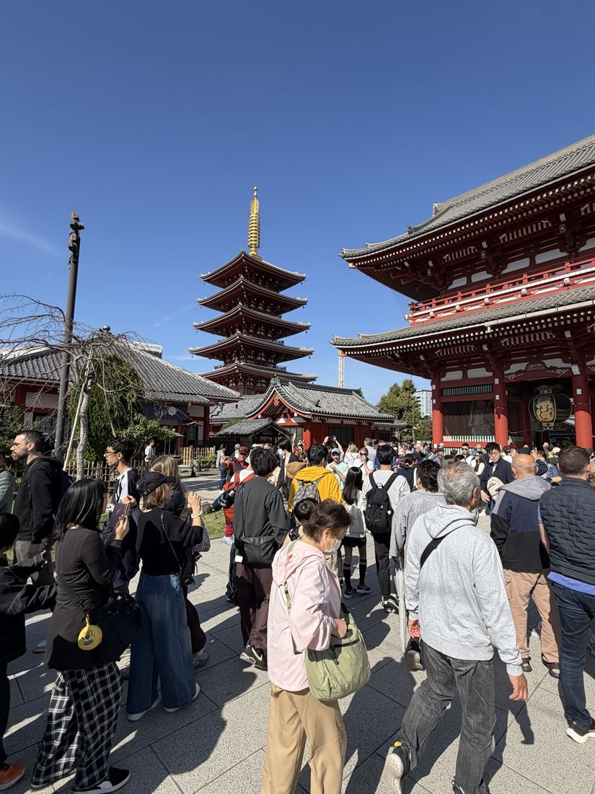

Real trails. Local stories. Beautiful discoveries.

From Asakusa to Ueno: temples, riverside views, historic neighborhoods, green parks and markets.
Our Tokyo walk is the practice tour. Future Baja hikes can use the same map, GPX trail, photographs and stop-by-stop descriptions, with offline support as a separate development goal.
Tap a numbered marker for photos and history. GPS positioning requires HTTPS and location permission. This is a route viewer, not turn-by-turn navigation.
Select a place to see photos from the walk and learn about the landmark.